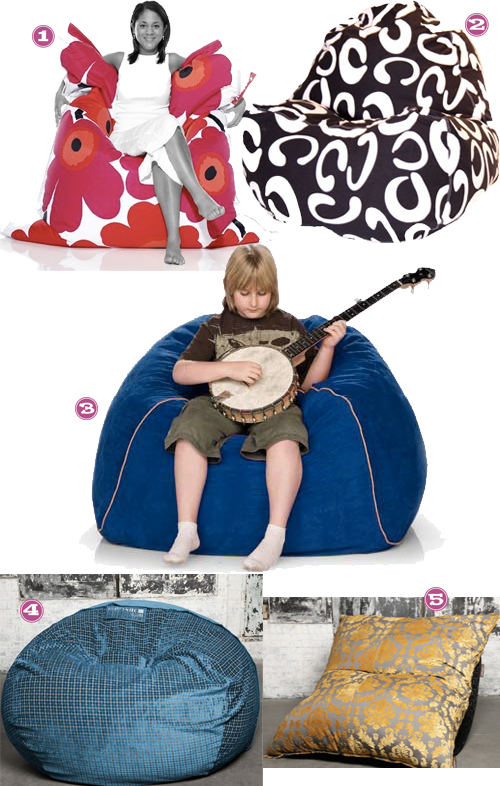
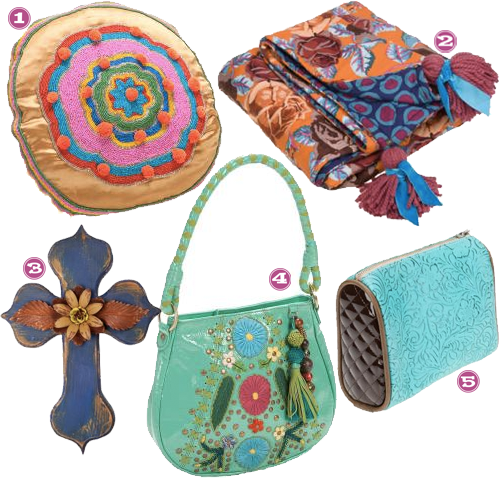
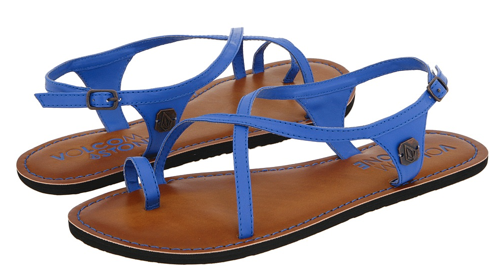
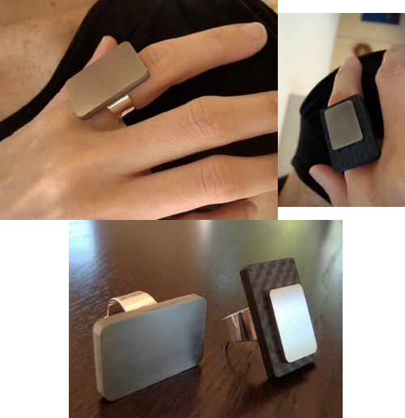

When do moms get to go back to school shopping? I know Aus got HOOKED up, and I am fallin hard for these fall essentials. I am definitely on the look out for some new pieces to add to my rotation and these have my name on them.


When do moms get to go back to school shopping? I know Aus got HOOKED up, and I am fallin hard for these fall essentials. I am definitely on the look out for some new pieces to add to my rotation and these have my name on them.
I used to love the HELL out of my cheesy ass beanbag. I literally loved it to death. Beans (white Styrofoam pellets) EVERYWHERE. After that, I’m pretty certain of a couple of things:
#1 I got cooler. #2 beanbags stayed the same level of coolness and/or dropped.
BUT…what I’m finding is that they’ve made a comeback? Or maybe got cooler? When did this happen? You tell me, do I need one of these?

Foot note:Â Also tell me if I’ve lost my damned mind loving on bean bags.
I’m not plastic or paper. I’ve seen a coupla of coworkers sporting these around.

Hot coffee and iced coffee! Great for the environment and lookin’ hip in the process.
My baby’s beginning a new school year and I am finding each year more and more fun. A lot of mom’s had the back to school experience this last week and I had to share mine!
I am so proud of my little man and love the experience of watching him grow up! 3rd grade, BRING IT ON.
GOOD GOD get these on my feet.

Wouldn’t these be a great transitional sandal for fall? Loving on the grey and the industrial feel to them. I think Sarah will appreciate them too, she was just loving on Nine West!
And she totally is teasin’ me. Damn Consuela. I’ll have to say the price tag on some of these things is a little out there–but she keep’s teasing me. IN LOVE with each and every item on this site.

Have you heard of Consuela and if so, why didn’t you introduce me sooner?
So you always want your place to look a little spruced up whenever throwing a shower at your own casa, right? Well, trouble being streamers-awful and so 1992, confetti -not so much, candles-blah, and its day time?
So, left me no choice but to go with these sweet tissue poms to add the perfect simple accent. It lets everyone know its party time (in Der’s nursery colors) in just the right way.

I will say the set up on these was a tad more time that I had thought, but completely worth it. Der even took home to hang in the nursery full time, so win win.
Are these not the cutest damn blue you have ever seen? I used to have a VW bug that was kind of this color and I think I am forever in love with the VORTEX Blue 🙂

I am also loving on the toe ring look, I think it makes these super special.
A few weeks ago I wrote about these after I fell in love with the delicate look that electrical cord could have when made into a ring. Same concept here.  A tad more industrial looking, but I am sporty spice, so it’s all good.

VERY cool rings made of high tech material just calling my name. The solid titanium is calling my name.

How cute are THESE? Â The price tag is a bit on the high side, but you could do so much with these. Â Want.it.STAT.


{kind=link}
Recent Comments